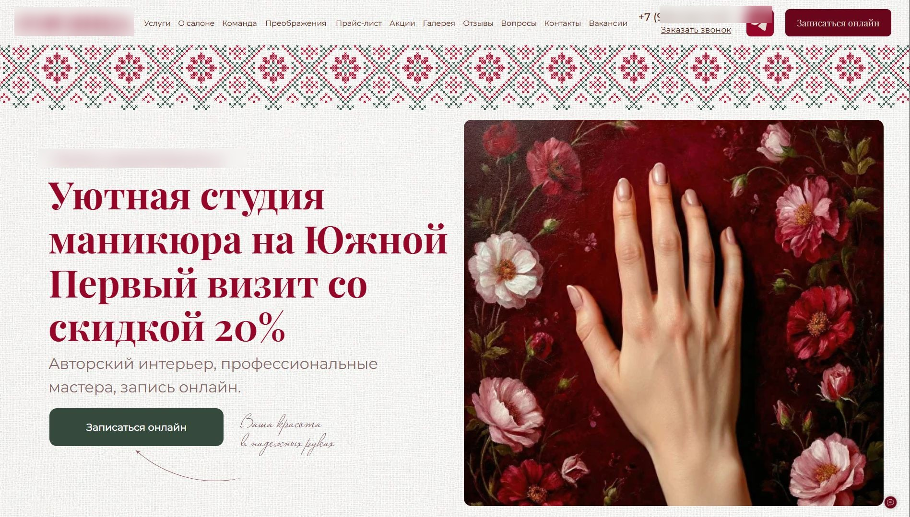

Период работыАпрель-август 2026, кампании запущены в конце марта 2026
Тип входаЗапуск с нуля
Состав работЯндекс Директ, цели и аналитика, конкурентный анализ и УТП, рекомендации по сайту
КаналыПоиск, РСЯ, ретаргетинг
Моя рольЗапуск и ведение Директа, настройка целей, конкурентный анализ, улучшение УТП, рекомендации по сайту. Сайтом занимался клиент, правки вносил его подрядчик.
КлиентНовый салон ногтевого сервиса без клиентской базы
01 · Исходная ситуация
О проекте и задача
Салон ногтевого сервиса открылся в Москве у метро Южная в конце февраля 2026 года. Интерьер авторский, в традиционном русском стиле, мастера профессиональные, но клиентской базы не было совсем. Цены выше среднего по району. Вокруг метро работает много студий, которые делают то же самое дешевле, в том числе сетевых, и на старте новый салон был для района просто одним из многих, без имени.
У клиента уже было базовое предложение: скидка 20% на первый визит. Этого оказалось недостаточно, чтобы человек выбрал именно этот салон. Задача была в том, чтобы получить первичный поток клиентов из Яндекса и понять, какие каналы и связки работают в этой нише.
Ниша сложная для контекстной рекламы. Человек выбирает салон рядом с домом или работой, приходит на конкретную услугу один раз, потому что она нужна сегодня, завтра или к мероприятию, а решение часто принимает под влиянием скидки, акции или соцсетей. Поэтому цена конверсии в таких проектах почти всегда выше маржи одной услуги: цель не заработать на первом визите, а привести человека, который останется постоянным клиентом.
Цели и аналитика
Перед запуском мы определили, что считать результатом. Салон принимает запись через онлайн-форму, но в этой нише люди часто предпочитают сначала написать в мессенджер или позвонить. Поэтому мы учитывали четыре типа обращений: запись через форму YClients, переход в мессенджер, клик по телефону и отправку формы на сайте. Микроконверсии вроде открытия виджета или выбора услуги в расчет не брали, чтобы не раздувать статистику. Самой ценной остается запись, но она случается реже остальных.
Колл-трекинга у клиента не было. Мы неоднократно предлагали его внедрить, но этого не произошло. Поэтому путь каждого обращения проследить нельзя: мы сверяли цифры Директа с обратной связью салона и понимали порядок величин, но по каждому сообщению в мессенджере не знаем, дошло ли оно до визита.
Для РСЯ это важно и по другой причине: стратегия обучается на целях. Если в цели попадают боты, алгоритм начинает искать похожий трафик. Поэтому позже мы отдельно чистили статистику от конверсий ботов.
Цели в Метрике
Список целей в Метрике, апрель 2026
02 · Работа
01
Конкурентный анализ и УТП
Мы изучили салоны вокруг метро: посмотрели цены, акции, программы лояльности и то, как каждый салон подает себя на сайте и в картах. Картина оказалась такой. Две ближайшие студии дешевле на 300-1 100 ₽ по основным позициям. Еще одна сопоставима по цене, но сильнее в маркетинге: у нее акции по дням, программа лояльности, уровни мастеров, фирменные форматы услуг. Несколько бюджетных студий работают на другую аудиторию, и конкурировать с ними ценой для салона не имело смысла.
Вывод получился такой: салон находится в верхней части рынка, и цена выше среднего может быть оправдана, но на сайте и в рекламе это нигде не объяснялось. У человека, который видит рядом несколько салонов, нет причины выбрать самый дорогой и неизвестный.
Базовые УТП у клиента были: интерьер, сервис, скидка 20% на первый визит. Такая же скидка была у одного из конкурентов, то есть отличием она не являлась. Мы улучшили подачу существующих УТП и предложили новые, а по акциям передали клиенту примеры того, что работает у конкурентов, и он выбрал подходящие. Идея простая: небольшая заманка в объявлении и на сайте приводит первого клиента, а дальше работают сервис и интерьер.
Таблица цен конкурентов
Фрагмент таблицы цен конкурентов без названий, июнь 2026
02
Приоритеты и семантика
Основной услугой выбрали маникюр: по нему собрали больше половины семантики. Педикюр, дизайн и наращивание вынесли в отдельные направления, чтобы у каждого были свои ставки и свои тексты: запрос на педикюр и запрос на дизайн отвечают на разные вопросы клиента.
Для поиска собрали 486 фраз и разбили их на пять групп по намерению: запись (явное желание записаться, максимальные ставки), маникюр как основная услуга, гео (метро и район), педикюр, дизайн и наращивание. Для РСЯ строили кампании по тем же направлениям.
Группировка семантики или майнд-карта, март 2026
03
Структура и запуск
В конце марта 2026 запустили пять поисковых кампаний по группам семантики, РСЯ по маникюру и ретаргетинг. Для РСЯ использовали фотографии интерьера и работ мастеров: интерьер это главное отличие салона, а работы показывают результат.
Первые месяцы кампании набирали статистику и обучались. Быстрого результата мы не ожидали: в новом аккаунте у алгоритмов Директа нет данных, а у салона нет узнаваемости. Поэтому апрель и май ушли на то, чтобы понять, какие связки конвертируют, а какие тратят бюджет впустую.
Структура кампаний
Структура кампаний в кабинете и примеры объявлений РСЯ
04
Оптимизация
Поиск не дал нужного результата
Поиск подбирал много запросов по разным брендам и видам маникюра. Кликабельность была низкой, мусорных кликов много. В мае мы закавычили часть ключей, чтобы показывать рекламу только по точным фразам. Идея была в чистке трафика, но результат оказался обратным: клик подорожал, а конверсий стало меньше. Кавычки сняли, вернули в топ ключи, по которым приходили заявки в апреле, и перешли на регулярную ручную минусацию: списки по районам и станциям метро, по информационным запросам.
Еще одна проба тоже не сработала: мы ограничили показ только теми, кто находится в зоне салона, но трафик упал сильнее, чем мы ожидали. Позже настройку вернули.
Поиск в итоге остался небольшим каналом. За апрель-август 2026 он забрал около 23% бюджета и дал 22 конверсии из 181, то есть около 12%. Клик на поиске стоил от 185 ₽ и выше, и при высокой конкуренции в районе это не окупалось. Расчет сделан по месячным отчетам.
РСЯ стала основным каналом
Основной бюджет мы перенесли в РСЯ: в мае 2026 цена конверсии там была 3 160 ₽ против 11 803 ₽ на поиске. Дальше работа шла по трем направлениям. Площадки: смотрели отчет по показам и отключали источники, которые тратили бюджет на клики и отказы без конверсий. Устройства: конверсия на компьютерах получалась вдвое дороже, чем на мобильных, поэтому сначала сократили ставки, а затем убрали ПК и планшеты из показа. Креативы: отключали объявления с низкой кликабельностью и усиливали лидеров.
Одна проба оказалась неудачной. Когда мы подняли лимит ставки, кампания стала хуже конвертировать. Прежние настройки вернули и увидели, что с ними кампания работала лучше. Вывод: в РСЯ увеличение лимитов не всегда добавляет конверсии, иногда оно добавляет только дорогой трафик.
Тесты аудиторий, текстов и картинок
Мы тестировали разные тексты, изображения и аудитории, среди них ретаргетинг и аудиторию сайтов конкурентов. По аудитории конкурентов цена конверсии составила 13 138 ₽ в июне 2026, более чем втрое выше, чем у основной кампании РСЯ в том же месяце, поэтому бюджет вернули на связки, которые работали лучше. В июне мы также обновили основную кампанию и тексты объявлений, и это дало улучшение после слабого начала месяца.
Что работало в текстах
Прямая подача выигрывала. Заголовок со словами «студия маникюра» и метро давал больше кликов и конверсий, чем УТП про дизайн интерьера или чай из самовара: такие тексты либо почти не показывались, либо кликались очень слабо. Человеку, который ищет маникюр рядом, сначала нужно понять, что это салон маникюра и где он. Про интерьер он узнает уже на сайте.
Педикюр в РСЯ рядом с маникюром не отрабатывал, поэтому услуги не смешивали: если кампания про маникюр, то и все объявления в ней про маникюр.
Боты и качество статистики
В июне подключили сервис защиты от скликивания. Помимо блокировки мы убирали из статистики конверсии от ботов, чтобы стратегии не обучались на них и не искали похожий трафик. Благодаря этому цифры в отчетах точнее, а кампании учились на реальных людях.
Показ без перерывов
Рекламу мы не останавливали. Салон новый, и узнаваемость у него растет вместе с числом показов: человек видит объявление в ленте, потом заходит в соцсети салона, потом возвращается и пишет или записывается. Часть конверсий приходила именно так, с задержкой. По мере роста узнаваемости росла и конверсия.
Площадки РСЯ
Площадки РСЯ до и после чистки, срез по устройствам, май-июнь 2026
05
Масштабирование
К августу стало понятно, что основная кампания РСЯ работает, но растет плохо: рост бюджета и ставок ломает ее обучение. Поэтому основную кампанию мы не трогали, а в начале августа 2026 запустили вторую, на комбинаторных объявлениях. В нее вошли связки-лидеры: автотаргетинг и узкая семантика, лучшие тексты и креативы из тестов, показ на всю Москву. Одновременно отключили группы без конверсий, аудиторию сайтов конкурентов и Lal, чтобы бюджет остался на связках, которые приводят обращения.
Новая кампания обучилась быстро и дала основной результат августа: 33 конверсии из 56. Это скорее исключение, обычно новой кампании в РСЯ нужно больше времени. Когда она обошла основную по цене конверсии (991 ₽ против 2 431 ₽), основную РСЯ остановили, и весь объем пошел через новую.
Показ на всю Москву сработал лучше, чем таргетинг на район, и это можно объяснить. Москва большая, люди перемещаются между районами, ездят на работу и в гости, и человека, готового записаться, нельзя привязать к одному району. Автотаргетинг, обучаясь на конверсиях, сам находит аудиторию, а жесткое ограничение по району оставляет ему слишком мало данных. Это наше объяснение по опыту, цифрами оно не подтверждено.
Формат комбинаторных объявлений в Директе был новым, и мы запустили его одними из первых. Возможно, Яндекс дает приоритет тем, кто рано тестирует новые инструменты. Документами Яндекса это не подтверждается, но за 10 лет работы с Яндексом такие запуски чаще выстреливают, чем нет.
Новая кампания: 991 ₽ против 2 431 ₽ у старой
Комбинаторные объявления
Кампания на комбинаторных объявлениях, август 2026
06
Работа с сайтом
Сайт делал клиент, он аккуратный и красивый. Но анализ воронки показал, что реклама приводит людей, а сайт не доводит их до действия: кнопку записи нажимает мало кто, виджет открывается меньше чем у половины нажавших, а те, кто до него дошел, записываются почти всегда. Проблема была не в самой записи, а в доверии и мотивации до нее.
Мы подготовили рекомендации на основе конкурентного анализа. Сайтом занимался подрядчик клиента: мы дали направление и примеры, а клиент внедрил следующее.
Акции, которые регулярно обновляются. Их же мы указываем в объявлениях, поэтому предложение в рекламе и на сайте совпадает.
Реальные фото работ вместо ретушированных картинок. Раньше на сайте были очень красивые, но постановочные изображения дизайна. Люди выбирают маникюр глазами и хотят видеть, что получат на самом деле.
Реальные фото мастеров с именами. Лицо и имя специалиста снимают страх идти к незнакомому человеку.
Бренды материалов на главном экране. Салон работает на дорогих брендах, которые есть не в каждом салоне, но это было спрятано в текстах. Аудитория внимательно смотрит, чем делают ногти, и бренд объясняет цену.
Отзывы с Яндекс Карт. Раньше на сайте были только рассказы салона о себе. Настоящие отзывы с карт дали сайту доверие, потому что видно, что они не нарисованы.
Сам сайт остался прежним, изменились точки доверия. После внедрения конверсия сайта выросла: общая конверсия из визита в обращение поднялась с 0,51% в апреле 2026 до 1,49% в августе 2026. Этот рост дали правки сайта и перезапуски РСЯ вместе, разделить эффект точно нельзя.
Конверсия из визита в обращение: 0,51% → 1,49%

Главная страница до и после правок, март и август 2026
03 · Итог
Результат
Первые три месяца, апрель-июнь 2026, кампании набирали статистику, тестировались и перезапускались: 25-34 конверсии в месяц при цене конверсии от 3 778 до 4 311 ₽. Это типичный старт для нового салона в конкурентной нише, где никто не знает бренд. Затем несколько месяцев оптимизации, правки сайта и перезапуски РСЯ вывели аккаунт на другой уровень.
В августе 2026: 56 конверсий, расход 104 982 ₽, цена конверсии 1 875 ₽, общая конверсия из визита в обращение 1,49%.
ПоказательБылоСтало
Реклама
Расход в месяцнет данных104 982 ₽
Конверсий в месяц25-3456
Цена конверсии3 778-4 311 ₽1 875 ₽
Сайт
Конверсия из визита в обращение0,51%1,49%
Ждать такого результата сразу не стоит. Ниша конкурентная и плохо подходит под Директ, новому салону нужно время, чтобы набрать узнаваемость, а кампаниям, чтобы обучиться.
Что мы считаем конверсией. Переходы в мессенджер, клики по телефону, отправки формы и записи YClients. Чаще всего люди писали в мессенджер, форму записи заполняли редко, многие сначала подписывались на соцсети и возвращались позже. Колл-трекинга не было, поэтому по обратной связи клиента около 80-85% конверсий заканчивались реальным контактом. Цена конверсии, таким образом, не равна цене заявки.
Динамика конверсий
Итоговая статистика по аккаунту за август 2026 и динамика по месяцам апрель-август 2026
04 · Выводы
Выводы
1
Поиск в этой нише слабый, первичных клиентов приводит РСЯ. Клиенты салонов в основном приходят из соцсетей и по рекомендациям. Поиск в нашем проекте отдал около 23% бюджета и 12% конверсий: клик дорогой, запросы разбросаны по брендам и видам маникюра, конкуренция в районе высокая. Первичное привлечение из Яндекса шло через РСЯ.
2
В РСЯ нужны тесты и перезапуски. Кампании ломаются и устают, и вместо бесконечной правки одной кампании эффективнее запустить две-три новые и оставить ту, что работает. Не бояться включать всю Москву: автотаргетинг сам находит целевую аудиторию, а жесткие ограничения по району оставляют ему мало данных. Тестировать стоит аккуратно и на небольшом бюджете.
3
Тексты и услуги нужно говорить прямо. Заголовок «студия маникюра» с метро работает лучше УТП про интерьер, а разные услуги не стоит смешивать в одной кампании. Интерьер и сервис продают уже на сайте, а в объявлении человеку нужно сразу понять, что это и где.
4
Новые форматы Директа стоит тестировать рано. Документами Яндекса это не подтверждается, но по нашим наблюдениям за 10 лет работы Яндекс чаще дает преимущество тем, кто первым пробует новые инструменты, как это было с мастером кампаний и баннером на поиске. Брать их нужно на свой страх и на небольшой бюджет: инструмент может оказаться сырым. Кампании нужно вовремя обновлять, старые форматы теряют позиции.
5
Результат приходит не сразу, а акция работает вместе с доверием. Цена конверсии часто выше маржи одной услуги: цель не заработать на первом визите, а вложиться в базу клиентов, у которых LTV нередко измеряется годами. Небольшая заманка в объявлении и на сайте приводит первого клиента, а доверие (реальные фото, имена мастеров, бренды, отзывы) помогает ему записаться. В конкурентной нише результат приходит после нескольких месяцев оптимизации, а не в первый месяц.
Мы благодарны клиенту за терпение и готовность вносить правки: не всякий хороший продукт продается сам, и без этих доработок результат был бы другим.
Александр Беляков · эксперт по Яндекс Директу
Нужны горячие заявки от клиентов, которые покупают?